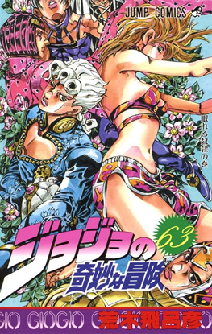
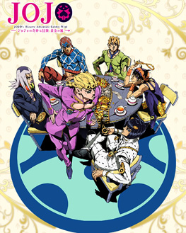

Opening
Fighting Gold
Portada
Manga
anime
Historia del manga
JoJo’s Bizarre Adventure Parte 5, titulada Vento Aureo (Golden Wind), se publicó como manga entre 1995 y 1999. La historia sigue a Giorno Giovanna, un joven que sueña con convertirse en un “gang-star” y limpiar la mafia italiana desde dentro. Giorno es hijo de DIO (usando el cuerpo de Jonathan Joestar), y posee un Stand llamado Gold Experience, que tiene el poder de dar vida a objetos inanimados. La trama se centra en su ingreso a la mafia Passione y su lucha por derrocar a su misterioso jefe, mientras protege a sus compañeros y combate a enemigos que utilizan Stands extremadamente creativos y peligrosos.
El anime de Vento Aureo se emitió entre 2018 y 2019, adaptando los 39 episodios del manga. La serie combina acción, drama y estrategia en los enfrentamientos de Stands, además de explorar la lealtad, la ambición y la moral dentro del mundo criminal de Italia.
Un dato curioso de esta parte es que los nombres de los Stands y muchos elementos están inspirados en la música italiana y bandas de rock, como King Crimson y Sticky Fingers. Además, la narrativa se centra más en la estrategia y el ingenio de los personajes durante los combates, mostrando cómo incluso un enfrentamiento sin fuerza bruta puede ser emocionante y creativo, un sello distintivo de la evolución de Araki como autor.